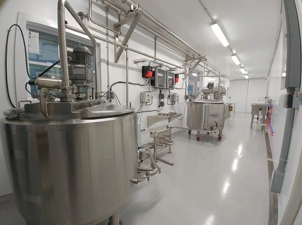

🏫 Institutions



We collaborate with educational and research institutions to foster growth and innovation in dairy science and technology. Our efforts focus on:
- Curriculum Development: Integrating modern dairy farming techniques and sustainability concepts into agricultural education.
- Research Collaboration: Supporting universities and colleges in advancing dairy genetics, nutrition, and production efficiency through joint research projects.
- Student Engagement: Offering internships, workshops, and practical sessions to prepare the next generation of dairy professionals.
- Technology Transfer: Facilitating the adoption of cutting-edge tools and innovations from research labs to practical field applications.
By partnering with institutions, AERO DAIRY helps build a knowledgeable workforce and drives scientific progress in the dairy sector.
Back to Target Audience